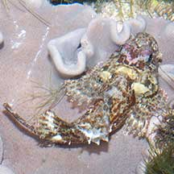
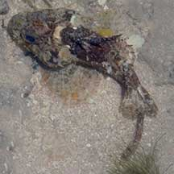
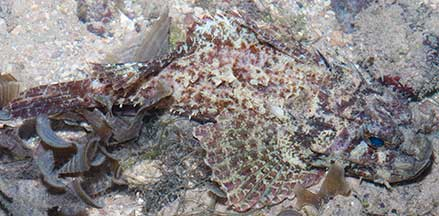
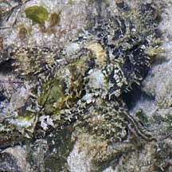
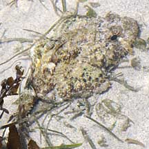

|
|
| fishes text index | photo index |
| Phylum Chordata > Subphylum Vertebrata > fishes > Family Scorpaenidae |
| Painted
scorpionfish Parascorpaena picta Family Scorpaenidae updated Oct 2019 Where seen? This rather grumpy-looking fish with bulging eyes is sometimes seen, especially on our southern shores, on coral rubble areas near reefs and/or seagrass meadows. Features: About 10cm long, to 17cm. A huge head, particularly obvious in a fish with a slender body (didn't eat much recently?). Large bulbous eyes that protrude out of the head. Wide mouth on a large head. Dorsal fin starts well behind the eyes. There are skin flaps and tentacles on the head and body. The dorsal fin has 12 spines. Sometimes mistaken for a stonefish (Family Synanceiidae) or the False scorpionfish (Centrogenys vaigiensis), a grouper, which looks very similar. Here's more on how to tell apart fishes that look like stones. |
 Tanah Merah, Jul 11 |
 Sisters Island, May 12 |
 A huge head, obvious when body is slender. Pulau Sekudu, Jun 03 |
 Labrador, Sep 09 |
 Bulbous eyes protruding out of the head. |
| Painted scorpionfishes on Singapore shores |
On wildsingapore
flickr
|
| Other sightings on Singapore shores |
 Pulau Senang, Jun 10| |
 Pulau Senang, Aug 10| |
Links
|